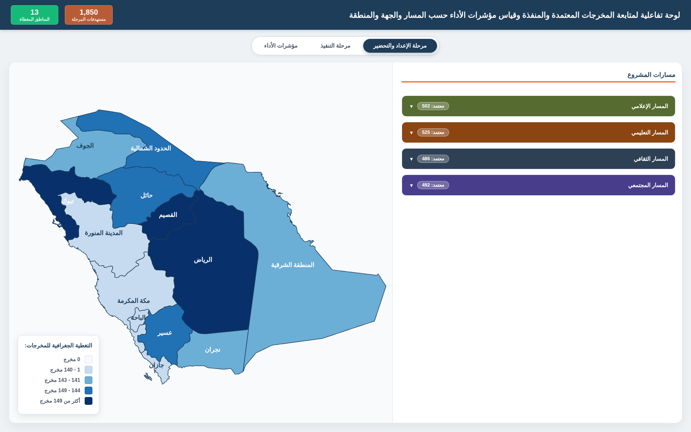

Interactive reporting across regions, tracks, entities, and timelines.
Designed an interactive reporting solution to organize, classify, and visualize a large portfolio of project outputs across Saudi Arabia. The solution combines geographic analysis, timeline tracking, KPI views, regional drill-downs, and an Excel reporting version for spreadsheet-based workflows.
Explore the live dashboard
Geographic view, stage switching, regional drill-downs and KPI analysis.


Prefer working in Excel?
The same synthetic dataset is also available through an Excel-based reporting dashboard with KPI summaries, track and monthly views, timeline analysis, master data, and regional drill-down sheets.